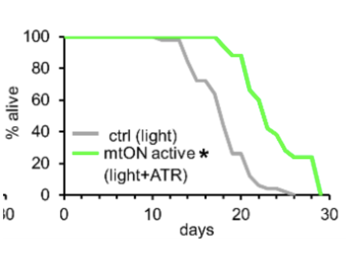
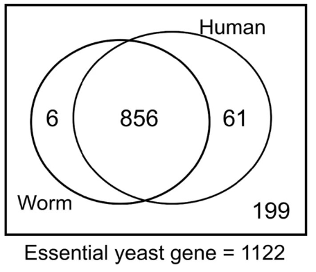

Impetus Grants: reflections on 2 years of going after risky aging science
Started in 2021, Impetus Grants made its goal to go after ideas in the aging space that would be ignored by traditional funders. Since then, we deployed more than $24 million into science, supporting a number of aging clinical trials, biomarkers, novel tools and model organisms.
This program wouldn't have been possible without Juan Benet, Vitalik Buterin, Fred Ehrsam, James Fickel, Hevolution Foundation, Jed McCaleb, Karl Pfleger, Michael Antonov and Molly Mackinlay.
Benchmarking science progress together with the traditional R01 NIH grant (1-1.5 years), we reduced grant response time and accelerated aging research by more than 95% during this past year.
By far the biggest metric for Impetus' success so far is that all projects we funded are happening much earlier than they would have happened otherwise. It is hard to put an honest number on these comparisons (we are very different programs), but here are some estimates: benchmarking this together with a traditional R01 NIH grant (1-1.5 years), we reduced grant response wait time and accelerated aging research by more than 95%. In most cases this translated into researchers getting funding faster and getting to projects sooner. In some cases, however, there were a zillion other things that delayed the project – from finding the right grad students to run studies to clinical registrations.
At least 48 new labs started working on aging because of Impetus funding.
Despite the rising popularity of the aging field in Silicon Valley scenes, the academic aging field is still a relatively small community. If you go to aging conferences (not Alzheimer's conferences - I mean actual aging!), you'd probably consistently see the same people (less than ~40 labs total). So the scientific future of the aging field is on the shoulders of less than 40 labs and I think it is a dire situation. There are some truly incredible minds working on aging, but it is impossible to progress fast if there are only 40 groups moving the field forward. Honestly, there are probably more labs working on CRISPR tools.
Impetus alone brought 48 new labs to work on aging without them having any exposure to aging research prior to Impetus funding. This has been a huge counterfactual because governmental funding makes it almost impossible to start working outside of your area of expertise.
Most of the research we supported would never get funded by existing institutions. And yet these ideas are already shaping the behavior of the whole field.
We started by purely receiving a lot of applications on Alzheimer's (that's where 60% of all the aging grants normally go). From the very start, it was our strong philosophy to use the funding to direct the attention of the field away from the disease-centered view and towards aging as a systematic process (incentives in science follow the funding!), and so it has been really cool to see this shift.
Why do I think they wouldn't receive funding otherwise? A lot of Impetus reviewer deliberations for funded projects (some already published with outsize success) have sounded like this: "This idea is extremely risky and unproven. They will likely fail. But the upside is big enough. Let's fund it!"
When it comes to solving complex scientific problems, there is often a big gap of unexplored ideas in the range of "too risky to be funded by the government" and "too unexplored to start a company". For example, it is basically impossible to incentivize companies to work on classes of drugs that went off-patent; likewise, it is really hard to fund properly-powered clinical trials in academia. So we have been filling this gap both during rounds 1 and 2.
It has been only 2 years since we funded things (good science takes much longer), but we already have seen a creation of an absolutely new branch of aging research.
In terms of science I have been super excited to see (especially in the light of our team thinking that this project was likely to fail!) is Optogenetic rejuvenation of mitochondrial membrane potential in C. elegans. Connecting biological mechanisms to aging is traditionally done in 2 ways: correlative analysis of gene expression with aging OR some form of perturbation over the function. In this context, perturbation is often done through knockout - which is not particularly elegant and is pretty confounded (complete loss of gene function is not what actually happens to our genes as we age!). This paper engineered a light-controllable proton pump, using which they managed to directly control membrane potential in mitochondria (previously disputed to be relevant for aging). Now, boosting membrane potential had a strong impact on worm's lifespan, which gives us a cool tested mechanism to target.

Another paper, testing impact of conserved essential genes on aging, was also a source of some translational suggestions. Conserved essential genes are essential - duh, you would say. Surprisingly, most of the aging studies till now studied only the impact of non-essential genes on lifespan. Obviously, the downregulation of essential genes would lead to loss of organismal viability, but would their upregulation have no effect? It turns out that ~20% of essential genes increase lifespan when overexpressed in yeast. This gives us 856 candidate genes to test in humans! (per # of conserved orthologs).

Impetus website right now has 10 papers from the Impetus round. So far, out of published 10 works, we've got 3 Nature papers – although I wouldn't overfit on the social standard of journal entry as a form of merit. There have been 114 projects that we funded so far, so most of the work is yet to come out! Part of these 2 years has been just gaining patience with the pace of science and realizing that risky science (and science in general for that matter) is not a one-off experiment. It is a series of failed experiments, with (often) little correlation between success and effort.
Patience with science, impatience with bureaucracy.